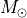
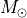
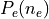

Tutorial
Use idPIE X-ray profiles.
To use idPIE profiles, one must choose which dPIE profiles are considered to trace the X-ray signal.
The idPIE profiles use the same parameters as the dPIE profiles, but convert them into their corresponding hydrostatic ICM density, and computes the expected X-ray signal. The joint optimisation of selected profiles yields additional constraints.
In practice, dPIE profiles (id:81) are co-optimised with X-ray using idPIE profiles if keyword X-ray 2 is added to the profile script.
For instance:
potential O1
profile 81
X-ray 2
x_centre 0.
y_centre 0.
ellipticity 0.5
angle_pos 0.
core_radius_kpc 100
cut_radius_kpc 2500.
v_disp 1000.
z_lens 0.3
end
limit O1
x_centre 1 -10. 5. 0.01
cut_radius_kpc 1 500. 10000. 100.
end
This requires to format include the X-ray section:
X-ray
pixel_area 0.00107584
Chandra 1
Optimization 1
Optimization_z 0.4
Temp0 13.4 # in keV
Jz_array 1 polyE Jz_polyE_z0.4000.csv
Type_factor_likelihood 1
factor_cash 252.2
constant_cash 0.
bkg_map 3 bkg_map.fits
count_map 3 count_map.fits
exposure_map 3 exposure_map.fits
end
where keywords Temp0 and Jz_array are proper to these hydrostatic X-ray profiles.
Temp0 is the pivot temperature model, eq. (17) in
Allingham+23b:
 .
It may be computed using routine
.
It may be computed using routine predT:
predT0 <redshift> <model_type> <M_500,c>
where the mass
 is in
, and the
is in
, and the <model_type> corresponds to the regression used for
. By defult, use polyEv1 for the latter.
Jz_array indicates how to compute the Jz function, relating the potential to the ICM density
 .
It takes three arguments:
.
It takes three arguments:
An integer.
0: do not perform the computation.1: perform it.A string for the model type. By default, use
polyE.A second string for the name of the output array. If the array is not computed (
0), this array must already exist.